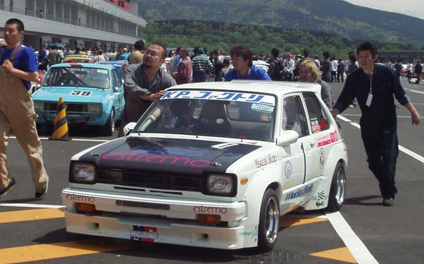
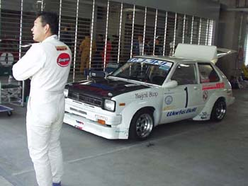
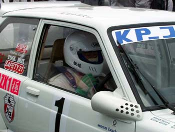
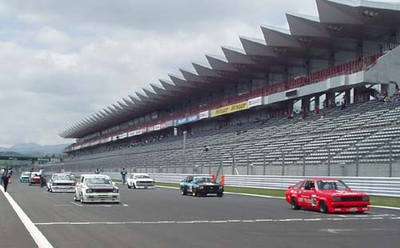
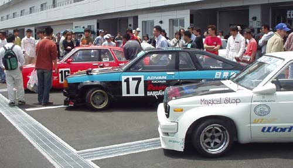

JCCA 30th FUJI JAMBOREE TSカップ第1戦
2005年のTSカップ第1戦の舞台は、2005年4月10日にリニューアルオープンしたFISCO。
国際レース対応に生まれ変わったFISCOは、最終コーナーセクションが大きく変更され、全長が4,416mから4,563mとなった。
国際レース対応に生まれ変わったFISCOは、最終コーナーセクションが大きく変更され、全長が4,416mから4,563mとなった。

レースレポート
開催日：2005年5月8日（日）
天候：晴れ
コース状況：ドライ
参加台数： TS-1クラス KP61 1台，310サニー3台（計4台） / TS-2クラス KP61 3台，310サニー4台（計7台） （2クラス合計11台）
車名：KP-ファクトリー・エストレモ スターレット （車番1）
ドライバー：田中 信夫
監督：二瓶 剛志
天候：晴れ
コース状況：ドライ
参加台数： TS-1クラス KP61 1台，310サニー3台（計4台） / TS-2クラス KP61 3台，310サニー4台（計7台） （2クラス合計11台）
車名：KP-ファクトリー・エストレモ スターレット （車番1）
ドライバー：田中 信夫
監督：二瓶 剛志



決勝グリッド

左から
1位 カフェトレドトリイサニー（赤）
2位 臼井自動車BARDAHLサニー（黒）
3位 ＫＰファクトリー・エストレモ スターレット（白）
リザルト
予選
| 順位 | 車番 | クラス | 順 | ドライバー | 型式 | 車名 | ベストタイム | 周回 | Ave.km/h |
|---|---|---|---|---|---|---|---|---|---|
| 1 | 16 | 1 | 1 | 影山正彦 | B310 | カフェトレドトリイサニー | 2'01.865 | 5 | 134.795 |
| 2 | 1 | 1 | 2 | 田中 信夫 | KP61 | ＫＰファクトリー・エストレモ スターレット | 2'06.660 | 6 | 129.692 |
| 3 | 17 | 1 | 3 | 臼井 弘明 | B310 | 臼井自動車BARDAHLサニー | 2'07.564 | 5 | 128.773 |
| 4 | 23 | 1 | 4 | 佐野 孝一 | B310 | ピットロードサニー | 2'09.454 | 6 | 126.893 |
| 5 | 44 | 2 | 1 | 神崎 猛 | B310 | BCC Factoryサニー | 2'12.626 | 5 | 123.858 |
| 6 | 4 | 2 | 2 | 玉利 龍治 | KP61 | マットフリークファクトリースターレット | 2'19.452 | 4 | 117.795 |
| 7 | 50 | 2 | 3 | 高橋 初夫 | KP61 | トヨタスターレット | 2'20.526 | 5 | 116.895 |
| 8 | 8 | 2 | 4 | 本山 喜広 | B310 | Bulletsサニー | 2'27.322 | 5 | 111.503 |
| 9 | 7 | 2 | 5 | 岡野 英明 | KP61 | ペンタゴンレーシングトラストスターレット | 2'28.129 | 5 | 110.895 |
| 10 | 5 | 2 | 6 | 佐藤 健一 | B310 | オートファクトリーカナヤマサニー | 3'36.479 | 2 | 75.882 |
| 11 | 22 | 2 | 7 | 小倉 良道 | B310 | リスタードPitroadサニー | - | 1 | - |
決勝
| 順位 | 車番 | クラス | 順 | ドライバー | 型式 | 車名 | 周回 | 所要時間 | ベスト |
|---|---|---|---|---|---|---|---|---|---|
| 1 | 16 | 1 | 1 | 影山正彦 | B310 | カフェトレドトリイサニー | 7 | 14'25.723 | 2'02.749 |
| 2 | 17 | 1 | 2 | 臼井 弘明 | B310 | 臼井自動車BARDAHLサニー | 7 | 14'54.541 | 2'05.142 |
| 3 | 1 | 1 | 3 | 田中 信夫 | KP61 | ＫＰファクトリー・エストレモ スターレット | 7 | 14'54.644 | 2'06.214 |
| 4 | 23 | 1 | 4 | 佐野 孝一 | B310 | ピットロードサニー | 7 | 15'21.091 | 2'09.848 |
| 5 | 44 | 2 | 1 | 神崎 猛 | B310 | BCC Factoryサニー | 7 | 15'31.304 | 2'09.217 |
| 6 | 8 | 2 | 2 | 本山 喜広 | B310 | Bulletsサニー | 7 | 16'43.757 | 2'22.378 |
| 7 | 7 | 2 | 3 | 岡野 英明 | KP61 | ペンタゴンレーシングトラストスターレット | 6 | 15'01.174 | 2'27.645 |
| 8 | 4 | 2 | 4 | 玉利 龍治 | KP61 | マットフリークファクトリースターレット | 4 | 9'16.758 | 2'17.639 |